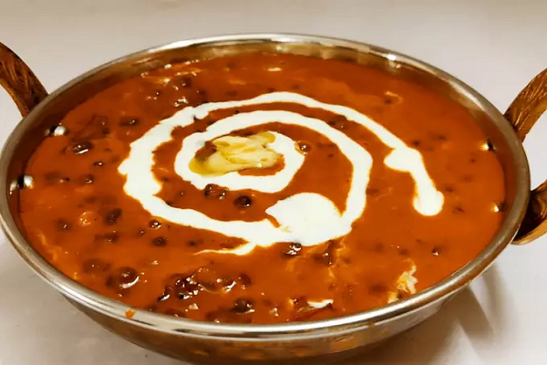

Dal Makhani
Punjabi Dal Makhani finds a place in almost all Indian restaurant menus. It is a staple in every punjabihousehold as well. The original recipe makes it rich and high in fat content because of the ghee and cream. These days because of the rise in health consciousness many people are weary of eating such high cholesterol and high fat content food. Yet they crave for it. And at times it gets difficlut to control and one ends up gorging on this sinful food.
Ingredients
- 1/2 cup Whole Black Gram (Saboot Urad Dal)
- 1/8 cup Rajma (Red kidney Beans)
- 1–2 green chillies slit lengthwise
- Salt to taste
- 1/4 tsp turmeric
- 2–3 Moti Elaichi
- 2 cloves
- 1 Tej Patta
- 1 small piece cinnamon
- 1/2–3/4 th cup low toned milk
- 1/4 tsp Hing (Asafoetida)
- 1 onion finely chopped
- 1 tsp ginger-garlic paste
- 1 tomato finely chopped
- 1/4 tsp red chilly powder (Lal MIrch)
- 1/2 tsp Cumin Seeds (Jeera)
- 1/4 tsp Garam Masala
- 1 tsp Coriander Powder
- 1 tsp Kasoori Methi (Dried Fenugreek Leaves)>
For Final Tadka
- 1 tsp Ghee/Butter
- 1/2 tsp Kashmiri Red Chilly
For garnish
- Few chopped sprigs of green coriander
- tsp Dahi
Directions
- Soak the dal and rajma overnight in water. The amount of water should be double the amount of dal and rajma as they are going to get double in volume upon soaking.
- Drain the water. In a pressure cook add dal, rajma, moti elaichi, cloves, tej patta, cinnamon, salt, turmeric and slit green chillies along with 4 1/2 cups of water.
- Close the cooker and bring to full pressure on high flame. After first whistle, turn down the flame to low and let the dal slow cook for 25 – 30 mins. Then turn off the heat and let the cooker cool naturally.
- When you open the cooker the dal should be soft and thick in consistency. Whisk it with a ladle and ensure that it is overcooked. Otherwise you can put in some more water and let it cook more till the dal gets mashed completely.
- Remove all the spices like taj patta, cloves and others from the cooked dal.
- Now add the milk. This will change the color of the mixture. Let it simmer till the dal gets thick and creamy in texture. This would take approximately 20 mins. Keep stirring constantly.
- n a separate pan, heat the oil and add the cumin seeds and hing. When they begin to crackle add onion and ginger garlic paste. Let them cook till onions are golden brown. Then add tomatoes. Let it cook till they are soft and mushy. Then add garam masala and coriander powder and red chilly powder. Stir constantly lest the masala gets burnt.
- After few seconds add the cooked dal-rajma mixture.
- Mix well and let it simmer for 5 – 10 minutes.
- Dish out the dal makhani in a serving bowl.
- Take a small tadka pan, heat ghee or butter and add red kashmiri chilly. Swirl for 5 seconds and immediately pour over the prepared dal.
- Garnish with green coriander and ginger juliennes.
- To get that perfect look you can swirl beaten curd for the final look.